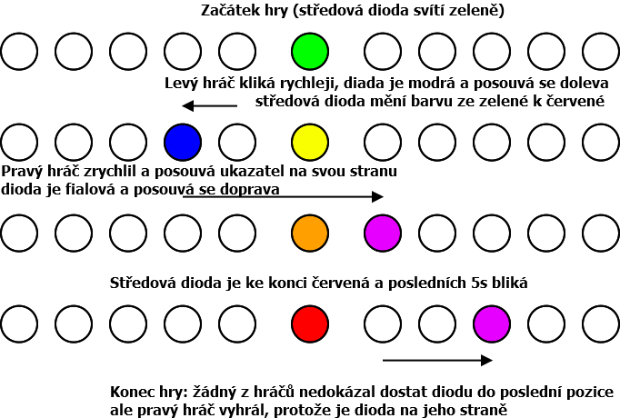

Soutěž v programování – 34. ročník
Krajské kolo 2020/2021
Na řešení úlohy máte 4 hodiny čistého času.
Pro řešení můžete použít vývojovou platformu s mikrokontrolérem dle své preference (např. Arduino, Raspberry, ESP8266, FRDM, STM32, micro:bit, PicAxe, BASIC Stamp, AVR, PIC …). Pro řešení úlohy budete dále potřebovat:
Vaše řešení nahrávejte do cloudu přístupného na adrese https://svp.proed.cz/
Přihlašovací jméno a heslo jste dostali emailem. Po přihlášení uvidíte
složku odpovídající vašemu přihlašovacímu jménu (např. X123) a do ní
řešení uložte. Pokud je řešení jedné úlohy složeno z více
souborů, doporučujeme je nenahrávat samostatně, ale jako jeden ZIP
archiv, jehož jméno odpovídá názvu úlohy (uloha-xyz.zip).
Vaše řešení musíte nahrát do 13:00, pozdější nahrání souborů nebude možné. Doporučujeme proto řešení nahrát s několikaminutovou rezervou. Pokud ve vaší kategorii řešíte více úloh, je vhodné každou úlohu nahrát hned, jak ji dokončíte.
Nahrávejte jak zdrojové kódy vašeho řešení, tak zkompilované spustitelné soubory (pokud to ve vámi používaném programovacím jazyce dává smysl).
Důležitou součástí vašeho řešení je video, které demonstruje
funkčnost vašeho řešení. Natočené video nahrejte do cloudu do složky
určené pro video (např. X123_video). U této složky bude
povolen zápis i po 13:00, takže se nemusíte obávat toho, že se vám
objemnější video nestihne nahrát včas.
Součástí vaší práce, a tedy i hodnocení, je vytvoření schématu zapojení vašeho mikrořadiče s periferiemi. Schéma stačí volnou rukou na papír a vyfotit, fotografii přiložit k řešení.
Pro řešení vytvořte vývojový diagram, který zadání řeší na úrovni větvení programu. I vývojový diagram bude součástí hodnocení, ale i ten stačí jen nakreslit na papír a vyfotit, fotografii přiložit k řešení.
U úlohy bude hodnocena i přehlednost zdrojového kódu (vhodné členění zdrojového kódu, vhodně zvolené názvy identifikátorů, komentáře na místech kde je to potřeba, atd.).
Vaším úkolem je realizovat jednoduchou hru pro dva hráče. Každý hráč má k dispozici své tlačítko. Hráči se snaží co nejrychleji mačkat tlačítko.
Další herní součástí je ručička vychylovaná servomotorkem. Na začátku hry je ručička ve střední poloze (90°), během hry se vychyluje na dvě strany (levá krajní poloha 0°, pravá krajní poloha 180°). Ručička se vychyluje na stranu hráče, který v danou chvíli mačká tlačítko rychleji.
Každý stisk tlačítka vychýlí ručičku směrem k hráči o 1/10 rozsahu pohybu ručičky (od středu do krajní polohy). Hraje-li pouze jeden hráč, po 10 stisknutích tlačítka je tedy ručička na jeho straně.
Cílem hry je překlopit ručičku na své straně do krajní polohy. Tím hra končí.
Další hra začíná poté, co oba hráči (najednou nebo postupně) stisknou své tlačítko. Hra začíná stiskem tlačítka. O začátku hry informují informační diody (viz níže).
Hra má časový limit 20 s. Po celou hru se sčítá levému i pravému hráči počet stisků. Jestliže žádný z nich nedokáže vychýlit ručičku do krajní polohy, vyhrává ten, kdo má více stisků.
Každý hráč má dvě skóre: skóre aktuální hry – počet stisků a celkové skóre – počet vítězství, kterých hráč dosáhl od zapnutí zařízení.
Mají-li levý i pravý hráč po uplynutí časového limitu stejný počet stisků, je hra anulována. Zařízení se chová, jako kdyby ke hře nedošlo; hra se nepřidává do celkového skóre.
Po resetu zařízení se servo přemístí do středové polohy a rozsvítí se zeleně prostřední LED na páse. Stejně se zařízení chová i 5 s po skončení poslední hry nebo po návratu z testovacího režimu (zde se jinak chová pás, viz. dále).
Při čtení stisku tlačítka je vhodné ošetřit zákmity tlačítka.
Každý hráč má na své straně samostatnou diodu. Když se nehraje, je dioda zhasnutá. Během hry svítí ve chvíli, když je ručička na straně hráče (vychýlená směrem od středu ke krajní poloze hráče).
Dále obě tyto diody slouží k odpočtu před začátkem hry – do zahájení hry (stisk obou tlačítek) po dobu 1 s blikají. Ve chvíli, kdy tyto diody zhasnou, hra začíná a počítají se stisky tlačítek. Od zahájení hry se diody chovají tak, jak je popsáno o odstavec výše. Ve chvíli, kdy hra skončí, na straně vítěze se dioda rozbliká a bliká až do zahájení příští hry.Po zapnutí testovacího režimu obě diody blikají (viz popis testovacího režimu).
Zařízení komunikuje s počítačem s pomocí sériové linky po celou dobu hry. Do sériové linky zapisuje:
Diodový pásek slouží k zobrazení dvou informací:
Pásek je rozdělen na levou a pravou polovinu, prostřední dioda zobrazuje čas. Levému hráči je přidělena modrá barva, pravému hráči fialová barva.
Levému hráči svítí v páse vždy nejvýše jedna modrá dioda, její poloha odpovídá poloze ručičky. Pravému hráči svítí v jeho polovině pásu vždy nejvýše jedna dioda fialově, poloha diody odpovídá poloze ručičky. Dioda se pohybuje v obou případech od středu pásu k okraji, střed odpovídá středové poloze ručičky, kraj mezní poloze ručičky servomotoru. Chování pásu je zakresleno v obrázku.

Čím blíže je rozsvícená dioda ke kraji pásu, tím vyšší je jas diody. Celkový počet diod záleží na vaší volbě a délce vašeho pásu, minimální počet je alespoň 5 pro každou stranu.
Středová dioda slouží k zobrazení informace o zbývajícím čase. Na začátku hry svítí jasně zeleně, během hry přechází plynule do červené, 5 s před koncem hry svítí jasně červeně. Posledních 5 vteřin dioda bliká (nejméně 3x za vteřinu).
Celkem tedy na páse využijete nejméně 11 diod (minimálně 5 vlevo, 1 střed, minimálně 5 vpravo).
Zařízení může kromě režimu, v němž se hraje (režim hry), pracovat také v testovacím režimu. Přepnutí do testovacího režimu se dělá polohovým přepínačem: jedna poloha přepínače odpovídá režimu hry, druhá poloha režimu testování. Testovací režim se tedy ukončí přepnutím přepínače do režimu hry.
Do testovacího režimu je možné se přepnout pouze ve chvíli, když se nehraje. Je-li do polohy pro testovací režim přepnuto během hry, aktivuje se testovací režim až po skončení hry.
Je-li zařízení v režimu testování, informační diody blikají podobně jako světla na železničním přejezdu: když svítí levá, nesvítí pravá a naopak.
V testovacím režimu se poloha ručičky nemění stiskem tlačítek, ale posunem potenciometru. Otočením vlevo vychylujeme ručičku vlevo, otočením vpravo směrem vpravo. Diodový pás reaguje na pohyb ručičky jako při skutečné hře tak, jak je popsáno v kapitole o diodovém pásu. Středová dioda ale barvu nemění – neplyne čas. V testovacím režimu vůbec nesvítí.
Při vstupu do testovacího režimu se do sériové linky napíše zpráva “Debug mode”.
Váš kód by měl být přehledný a srozumitelný. U jednotlivých funkcí v komentáři stručně popište jejich účel. Dále doplňte svou práci stručným popisem toho, jak je co zapojeno – tedy na jakých portech máte připojena zařízení. Popište, jak řešíte zákmit tlačítek.
Odevzdáváte zdrojový kód a video natočené podle testovacího scénáře. Video natáčejte maximálně s rozlišením Full-HD. Video se může skládat z více částí, s natáčením videa může pomáhat druhá osoba.
Video můžete komentovat a vysvětlovat, co demonstrujete.
Video je základní podklad pro hodnocení, co není vidět ve videu, za to nedostanete body (s výjimkou bodů, které se týkají zdrojového kódu a dokumentace).
Při demonstraci funkce sériové linky je nutné zabírat také displej počítače s otevřeným terminálem sériové linky.
Je naprosto nutné dodržet níže předepsaný testovací scénář, jinak vám nemůžeme přidělit správně body. Zachovejte pořadí akcí tak, jak je ve scénáři popsáno.
Maximální délka videa (nebo všech částí v součtu) by měla být zhruba 2 minuty.
Ve vašem videu dodržte následující postup: